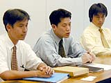

| ■本体デザインのシェイプアップ |
| 太田 ＣＰＵと平行して、液晶のサイズに合わせたデザインや構造を考えます。キーレイアウトや、液晶の配置などですね。液晶はヨコになってるんですけど、タテ型を検討したり。試行錯誤しながら。 |
| 編集長：なぜヨコ型になったのですか？ |
| 杉野 もちろん、われわれも最初はタテ型を検討したんですが、この液晶の大きさでタテ型にするとハード全体が大きくなってしまうんですよ。任天堂のゲームボーイは12年間ずっとタテ型だったんですけど、携帯ゲームというのはコンパクトなのが一番ですよね。そこで、今回は液晶に合わせてヨコ型にしようと割りきりました。 太田 それから、ＣＰＵの性能が上がることでテレビゲームの移植がしやすくなりますよね。その点を考えてテレビの比率に近いヨコ型の画面になったんです。 |
| 編集長：ＬＲボタンの構想はいつごろ出てきたんですか？ |
| 杉野 ソフト開発者から、ボタンを増やしてほしいという要望がずっとあったんです。そこで今回、新しいタイプのゲームに対応するためにボタンを増やそう、と。じゃあ、なにを増やせばいいかということをソフト開発者と相談し、ＬＲボタンに決まったんです。 |
| 編集長：本体の色は何種類あるんですか？ |
| 杉野 スペースワールドではシルバーベースにオレンジ、ブルーという２色とクリアとクリアパープルの計４色を出展しますが、量産ではどういった色にするかは決めていません。 |
| 編集長：手に持っているとすごく軽く感じるんですが、材質はなにか特別なものを使っているんですか？ |
| 太田 ゲームボーイカラーと同じ材質なんですけど、重量バランスがいいので軽く感じるんだと思います。苦労したのは、電池をどこへ持ってくるかということですね 梅津 その形になるまでにだいぶモデルを作りましたね。私なども素人ながらに、試作品を作ってみたりとか。 杉野 携帯ゲーム機だからといって、小さければいいというものではないんですね。ゲームをする為には操作性のよさというのが重要なんです。そのへんは長いこと携帯のゲーム機を作ってきている者として、こだわっている点ですね。 |
| 編集長：デザインの試作はいくつくらい作ったんですか？ |
| 杉野 スケッチ段階も入れると……かなりありますね。ゲームウォッチみたいなフタ付きのものも作ってみたんですが、フタがあると分厚くなるんで、全体が大きくなってしまったんですよ。分厚くてポケットに入らなかったり・・・（笑）。 |
| インタビュー ■ＩＮＤＥＸ |
|
|
|